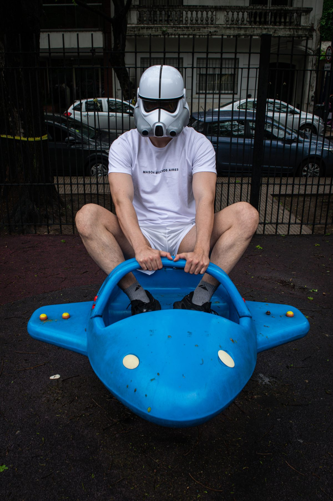
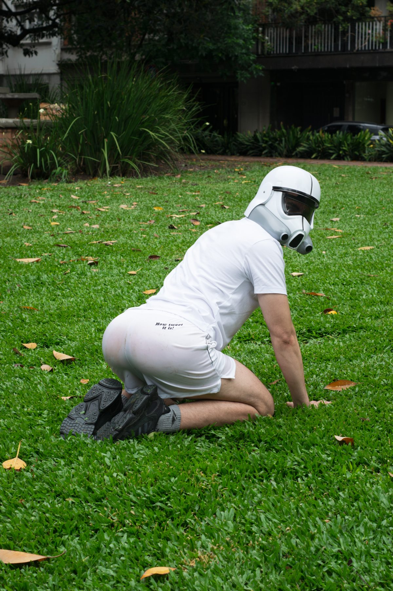
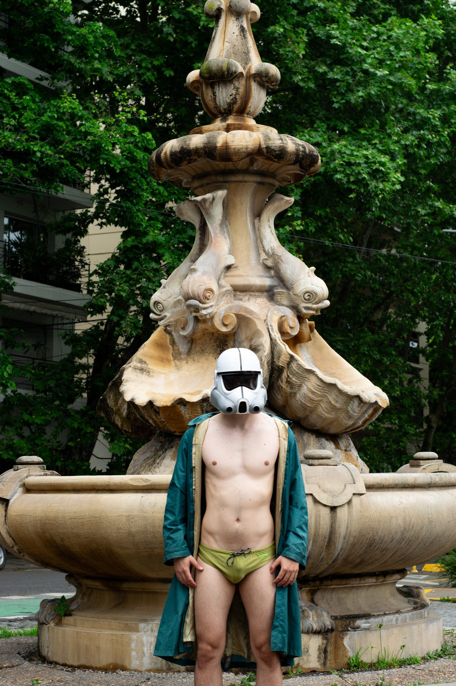

Stormtrooper
Aquel río
está en la memoria
como un perro vivo
dentro de un bolsillo.Como un perro vivo
bajo las sábanas,
bajo la camisa,
bajo la piel.Un perro, porque vive
es agudo.
Lo que vive
no se embota.
Lo que vive hiere.El hombre,
porque vive,
choca con lo que vive.
Vivir
es ir por entre lo que vive.El que vive
incomoda de vida
el silencio, el sueño, el cuerpo
que soñó con cortarse
trajes de nubes.Lo que vive choca,
tiene dientes, aristas, es espeso.
Lo que vive es espeso
como un perro, un hombre,
como aquel río.Como todo lo real
es espeso.
Aquel río
es espeso y real.
- Vestuario@mason.bsas
- Retrato@gabrielcataldi


